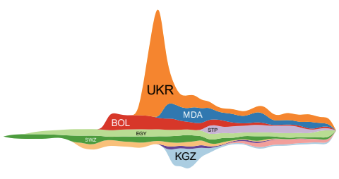

SineStream: Improving the Readability of Streamgraphs by Minimizing Sine Illusion Effects | HCI Stuttgart

Authors. Chuan Bu, Quanjie Zhang, Qianwen Wang, Jian Zhang, Oliver Deussen, Michael Sedlmair, Yunhai Wang
Venue. TVCG (2020)
Abstract. In this paper, we propose SineStream, a new variant of streamgraphs that improves their readability by minimizing sine illusion effects. Such effects reflect the tendency of humans to take the orthogonal rather than the vertical distance between two curves as their distance. In SineStream, we connect the readability of streamgraphs with minimizing sine illusions and by doing so provide a perceptual foundation for their design. As the geometry of a streamgraph is controlled by its baseline (the bottom-most curve) and the ordering of the layers, we re-interpret baseline computation and layer ordering algorithms in terms of reducing sine illusion effects. For baseline computation, we improve previous methods by introducing a Gaussian weight to penalize layers with large thickness changes. For layer ordering, three design requirements are proposed and implemented through a hierarchical clustering algorithm. Quantitative experiments and user studies demonstrate that SineStream improves the readability and aesthetics of streamgraphs compared to state-of-the-art methods.